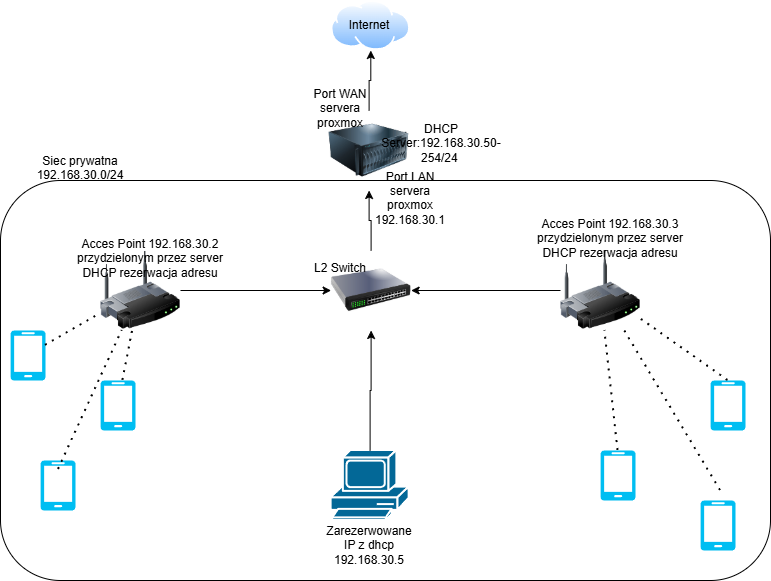

Wprowadzenie i Cel Projektu
Projekt obejmował zaprojektowanie, wdrożenie od zera i utrzymanie niezawodnej infrastruktury sieciowej dla rodzinnego domu dziecka, obsługującej codzienne potrzeby ponad 10 mieszkańców. Głównym celem było zapewnienie stabilnego, bezpiecznego i monitorowanego dostępu do Internetu, z uwzględnieniem szczególnych wymagań dotyczących ochrony użytkowników nieletnich.
Główne Wyzwania
- Brak infrastruktury: Potrzeba zbudowania całej sieci od podstaw w sposób skalowalny i zarządzalny.
- Niezawodność: Zapewnienie ciągłości dostępu do Internetu dla wielu użytkowników jednocześnie korzystających z sieci do nauki i pracy zdalnej.
- Bezpieczeństwo: Konieczność ochrony użytkowników, w tym dzieci, przed zagrożeniami z Internetu oraz wdrożenie mechanizmów kontroli dostępu.
- Zarządzanie: Uproszczenie administracji siecią i umożliwienie zdalnego wsparcia technicznego.
Architektura Rozwiązania
Poniższy diagram przedstawia architekturę wdrożonego rozwiązania. Sercem sieci jest zwirtualizowany na serwerze Proxmox router pfSense, który pełni rolę centralnego punktu zarządzania ruchem, bezpieczeństwem i usługami DHCP. Punkty dostępowe Wi-Fi działają w trybie bridge, zapewniając jednorodną i spójną sieć dla wszystkich urządzeń.
Diagram finalnej topologii sieci wdrożonej w organizacji.
Kluczowe Elementy Konfiguracji
Poniższe zrzuty ekranu ilustrują najważniejsze aspekty konfiguracji, które pozwoliły zrealizować cele projektu.
1. Centralny Serwer DHCP na pfSense

Uruchomienie jedynego, centralnego serwera DHCP w sieci, co eliminuje konflikty adresów i upraszcza zarządzanie.
2. Statyczne Rezerwacje dla Urządzeń Kluczowych

Przypisanie stałych adresów IP dla krytycznych elementów infrastruktury, co ułatwia monitoring i tworzenie reguł firewalla.
3. Konfiguracja Punktu Dostępowego w Trybie Bridge

Panel jednego z punktów dostępowych, pokazujący wyłączony serwer DHCP. Urządzenie działa jako przezroczysty most, przekazując zarządzanie adresacją do centralnego routera pfSense.